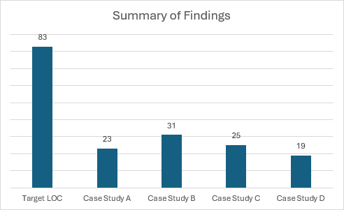

Summary of Findings
To summarise the findings discovered through the gap analysis's undertaken with the case studies, we can clearly see that the practicing of quality cybersecurity hygiene is not something that is commonplace in the world of football, particularly here in Scottish football. None of the case studies who agreed to take part in this project achieved an adherence score of above 40%, and even one of the case studies had a score as low as 15.8% - from this, we can deduce that these football clubs would make easy prey for any would be cybercriminal.
Looking at the below figure, we can clearly see an easy-to-read summary of the findings. From it, we can clearly see the lengths of which football clubs need to go to improve their cybersecurity hygiene; protecting not just their information, but also their people and the rest of their assets.
It is important to note, however, that these case studies whom agreed to take part in this project, are far from being the biggest names in football that we see every weekend. It is easy to get carried away with looking at the negatives, but we must acknowledge that these football clubs simply do not have the same level of resources, both on a financial and personnel level, that the biggest names across the globe do. We can see from the above figure, however, that the higher up a football club is in the league system, then the higher the amount of resources available - we can clearly see from this a correlation between the amount of resources available and the level of compliance reached.
While undertaking these gap analysis's, several key areas of interest were discovered by the researcher, areas that had a reoccurring nature in all of the case studies. Some of these are as follows:
- A lack of knowledge surrounding cybersecurity frameworks, how they would benefit, and the level of protection they bring.
- Most case studies did not have a dedicated IT person or team, with members of staff pitching in wherever necessary.
- A lack of training with regards to training and cybersecurity - clearly leading to increased levels at which attacks could take place.
- A lack of resources available to implement cybersecurity protection - this, in turn, lead to case studies deeming cybersecurity as unimportant in comparison to other business operations.
- All of the case studies held the belief of "but who would want to attack us?", further enhancing the idea that a strong cybersecurity strategy is not the biggest priority with regards to business operations.
Steps must be taken by not only these football clubs, but all football clubs around the world to ensure an appropriate level of resources are dedicated to the formation and upkeep of a strong and robust cybersecurity strategy. The hybrid cybersecurity framework created as part of this project is the perfect starting point for all football clubs to get their feet off the ground and to improve whatever situation they currently find themselves in.